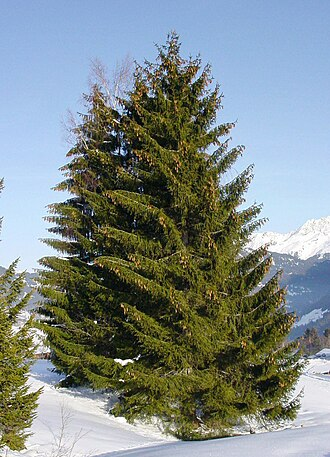

Picea — Spruce (Picea)
A stoic northern giant who soaks up punishment with dense, resinous timber and outlasts enemies through sheer staying power — slow to anger, but once roused, unyielding.
Combat flavor
Picea is the bog-standard bruiser of the boreal — it won't strike fast, but its high biomass and rot-resistant resin make it absorb hits that would fell a lighter tree. Its signature ability could be a resin coat that slows attackers and increases its own durability over time.
Real-world facts
Typical / max height20–40 m typical; up to 70 m (Sitka spruce, Picea sitchensis — sixth-tallest tree species on Earth)
Lifespan250–450 years typical; Sitka spruce up to 700–800 years
Wood~470 kg/m³ air-dry (Picea abies); Janka ~1,680 N — soft-to-medium for a conifer, but high strength-to-weight ratio
Growth speedmedium (Norway spruce ~15–20 cm/season)
Ecology / notable traitsResinous wood resists rot and insects; dominant species of boreal taiga; shallow roots make mature trees wind-snap prone; highly allelopathic leaf litter suppresses understory rivals; old-growth stands reach enormous above-ground biomass (~1,163 t/ha in Sitka forests)
Gallery
